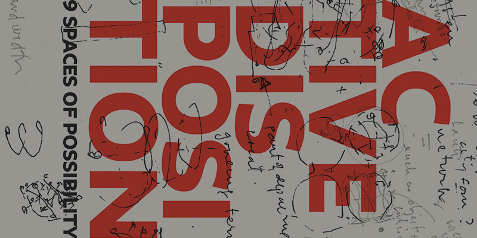

Graduate Thesis Publications
These two graduate thesis publications were designed to showcase the work of the Class of 2015 Design and Urban Ecologies and Theories of Urban Practice students. Created Collaboratively with Gamar Markarian.
Design and Urban Ecologies
This Master of Science program radically reframes the study of cities. Through research and fieldwork, students gain a broad understanding of the complex economic, political, social, environmental, and physical forces that influence urban growth and development. Working in multidisciplinary teams, they design processes for urban transformation.
Theories of Urban Practice
The MA Theories of Urban Practice is a research-driven graduate program for curious urban thinkers and makers interested in exploring new avenues beyond conventional urban planning and design to gain a broad understanding of the social, political, economic, and environmental forces that affect cities.
Lakewood City Sustainability and Planning
During the summer of 2015 I completed a Sustainability Internship with Lakewood City Sustainability and Planning. While my work consisted of helping out with the municipal sustainability plan, I also helped to improve public outreach for the plan and plan activities.
Sustainable Neighborhoods
This is a portion of marketing material that I designed in conjunction with Lakewood's Sustainable Neighborhoods Program. The Sustainable Neighborhoods Program gives residents the opportunity to become active partners in making Lakewood a vibrant and sustainable community. The progressive bike ride was designed to raise funds and awareness of local environmental issues.
Zero Waste Events
Part of Lakewood's Sustainability initiative was to reduce generated waste by 2050. One portion of that plan required the development of tools for the citizens of Lakewood to put to use. This toolkit is a step-by-step guide to planning a successful zero waste event.
During the summer of 2015 I completed an internship with The GrowHaus, a non-profit that produces and
distributes organic food to low-income communities. As their digital desgin intern, I designed communications and marketing materials that required a sensitivity to
local residents as well as a knowledge of the GrowHaus visual identity.
Seed2Seed Recipe Book
The Seed2Seed Recipe Remix book is a compilation of recipes eaten, prepared, and created by Seed2Seed students. Throughout the summer students learn to thoughtfully consider where their food comes from, how it is prepared, and how it will impact their overall health.

Beer Labels
These beer labels were created for one of my very best friends weddings. Her husband brewed the beers, himself and they were looking for fun labels to match each homebrew.
Because this work has been contracted to me by nonprofit, governmental and private sector entities, all work is respectively copyrighted.